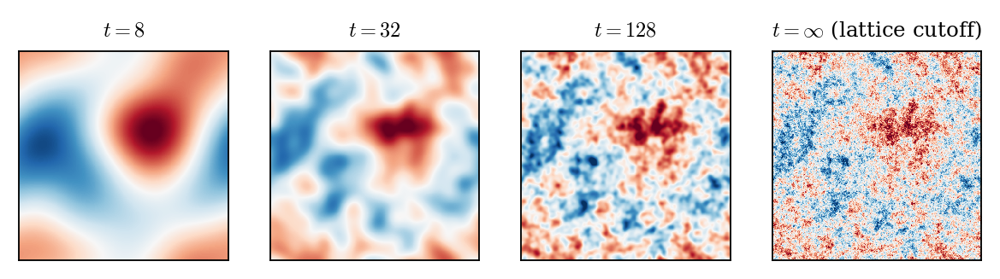
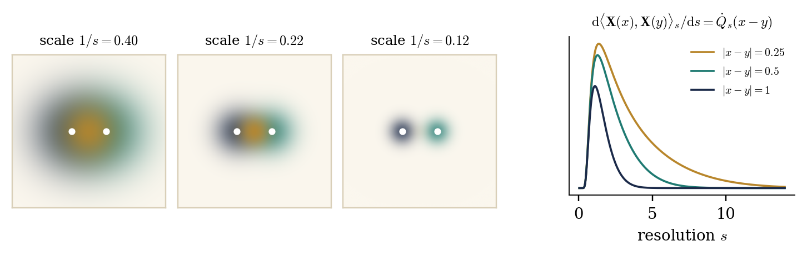

Constructive quantum field theory — Lecture 3 (notes)
A Constructive Introduction to Quantum
Field Theory
Lecture 3: Stochastic quantisation and
stochastic observables
by M. Gubinelli
Mathematical Institute, University of Oxford
SISSA, October 2026
Abstract
We first show that the Gaussian free field is the
stationary one-time (resp. one-point) marginal of the parabolic (resp.
elliptic) stochastic quantisation equation. We then decompose it along
a scale parameter and take as primary objects the stochastic
observables: martingales in the filtration of finite-resolution
measurements. As examples we study Wick powers as observables in every
dimension, and their products (operator product expansion).
Interactions are introduced in Lecture 4. Exercises are collected at
the end of each section. These notes follow the slides of Lecture
3.
We start from stochastic quantisation (Section 4): the GFF
is the stationary marginal of a Langevin dynamics in an auxiliary time,
and the one-point marginal of an elliptic equation in two additional
dimensions. This is a first way to describe a Euclidean field by an
equation for the field itself.
We then change the point of view (Section 5): instead of a
single random distribution, we look at the field observed at every
finite resolution, and take as primary objects the stochastic
observables of [BCG26]: martingales in the filtration of
finite-resolution measurements.
Sections, equations and exercises keep the numbering of the whole
course: references to Sections 1–3 are to the notes of Lectures
1–2.
Structure.
Section 4 treats the stochastic quantisation of the GFF.
Section 5 introduces covariance profiles, the field at
resolution \(t\) and stochastic observables, and Section 6
studies the observables of the GFF and their products. Interactions,
the Polchinski equation and the forward–backward equations are
the subject of Lecture 4.
Conventions.
As in Lectures 1–2: \(\mathcal{M}=\mathbb{T}^d_L\) or
\(\mathbb{R}^d\), \(A = m^2 - \Delta\), \(C = A^{- 1}\) with kernel
\(G\), \(\mu_m\) the GFF, \(\langle f, g \rangle = \int fg\) for real
functions. For a functional \(F\) on smooth fields, \(DF (\varphi) \in
\mathcal{S}' (\mathcal{M})\) and \(D^2 F (\varphi)\) are its first and
second derivatives, \(D_h F = \langle DF, h \rangle\). \(H_n (a ;
c)\) are the Hermite polynomials of variance \(c\), and \(\mu^Q\) is
the centred Gaussian measure with covariance \(Q\).
4Stochastic quantisation
Stochastic quantisation describes a Euclidean field as the marginal of a
stochastic dynamics. For the GFF the dynamics are linear and everything
can be computed explicitly; we give two versions, parabolic and
elliptic.
4.1The GFF as stationary marginal of parabolic
stochastic quantisation
Langevin dynamics.
If \(S : \mathbb{R}^N \to \mathbb{R}\) is smooth with \(\mathrm{e}^{-
S} \in L^1\), the diffusion \(\mathrm{d} X_t = - \nabla S (X_t)
\mathrm{d} t + \sqrt{2} \hspace{0.17em}
\mathrm{d} B_t\) has generator
\(\mathcal{L}= \Delta - \nabla S \cdot \nabla\), and
\(\mathcal{L}^{\ast} \mathrm{e}^{- S} = \nabla \cdot (\nabla
\mathrm{e}^{- S} +
\mathrm{e}^{- S} \nabla S) = 0\): the Gibbs measure
\(\mathrm{e}^{- S (x)} \mathrm{d} x / Z\) is invariant. Parisi and Wu
[PW81] proposed to apply this to the Euclidean action,
introducing a fictitious “stochastic time” \(t\):
with \(\xi\) space-time white noise. This is (parabolic) stochastic
quantisation. For \(V = 0\) it is the stochastic heat equation, an
infinite-dimensional Ornstein–Uhlenbeck process.
History.
Parisi and Wu [PW81] introduced stochastic quantisation
to do perturbation theory for gauge theories without gauge fixing. The
physics literature of the 1980s is reviewed by Damgaard and
Hüffel [DH87], whose reprint volume [DH88]
collects the original papers. Jona-Lasinio and Mitter [JLM85]
gave the first mathematical construction of the dynamics for \(P
(\varphi)_2\) on the torus, where the Wick-ordered interaction makes
(4.1) a singular SPDE. They used
Girsanov's theorem for a variant of (4.1)
in which the drift is smoothed by \((1 - \Delta)^{- \varepsilon}\) and
the noise has covariance \((1 - \Delta)^{- \varepsilon}\) (a slightly
coloured noise), which still has the \(P (\varphi)_2\) measure as
invariant measure. A recent review of the mathematical theory is [Gub25].
Space-time white noise on \(\mathbb{R} \times \mathcal{M}\) is a centred
Gaussian family \((\xi (u))_{u \in L^2 (\mathbb{R} \times
\mathcal{M})}\) with \(\mathbb{E} [\xi (u) \xi (v)] = \langle u, v
\rangle\), formally \(\mathbb{E} [\xi (t, x) \xi (s, y)] = \delta (t -
s) \delta (x - y)\). Let \(W_t (h) = \xi (\mathbb{1}_{[0, t]} \otimes
h)\), \(t \geq 0\), a cylindrical Brownian motion. For a (weak) solution
\(\Phi\) of (4.1) with \(V = 0\) and
\(F = g (\varphi (f_1), \ldots, \varphi (f_n)) \in
\mathcal{F}C^{\infty}_b\), Itô's formula shows that \(F (\Phi_t) -
\int_0^t \mathcal{L}F (\Phi_r) \mathrm{d} r\) is a martingale, with
Proposition 4.1.
(DS \(\Rightarrow\) invariance)
For \(F, G \in \mathcal{F}C^{\infty}_b\):
\(\mathbb{E}_{\mu_m} [G \hspace{0.17em} \mathcal{L}F] =
-\mathbb{E}_{\mu_m}
[\langle DG, DF \rangle_{L^2 (\mathcal{M})}]\). In
particular \(\mathbb{E}_{\mu_m} [\mathcal{L}F] = 0\).
Proof. We may assume \(F = g (\varphi (f_1),
\ldots)\) and \(G = k (\varphi (f_1), \ldots)\) with the same \(f_i\).
Apply (3.10) of Lecture 2 to the cylinder function \(k
\hspace{0.17em} \partial_i g\) with \(h = f_i\) and sum over \(i\):
\(\sum_i \mathbb{E} [k \hspace{0.17em} \partial_i g \hspace{0.17em}
\varphi
(Af_i)] = \sum_{i, j} \langle f_i, f_j \rangle \mathbb{E}
[\partial_j k
\hspace{0.17em} \partial_i g + k \hspace{0.17em}
\partial_{ij} g]\). Insert this into \(\mathbb{E}
[G\mathcal{L}F]\).\(\Box\)
So the static characterisation (DS) and the dynamic one (invariance
under the Langevin flow) are two faces of the same integration by parts
formula.
Theorem 4.2. (Parabolic stochastic quantisation of the GFF)
Let \(\xi\) be space-time white noise on
\(\mathbb{R} \times \mathcal{M}\). For \(t \in \mathbb{R}\) and \(f
\in \mathcal{S} (\mathcal{M})\) define
\(\Phi\) is a centred Gaussian process with \(\mathbb{E}
[\Phi_t (f) \Phi_s (g)] = \langle f, \mathrm{e}^{- |t - s|A}
Cg
\rangle\). In particular \((\Phi_t)_{t \in \mathbb{R}}\) is
stationary and, for every \(t\), \(\Phi_t\) has a version with
values in \(\mathcal{S}' (\mathcal{M})\) whose law is
\(\mu_m\).
\(\Phi\) is a mild and weak solution of (4.1) with \(V = 0\): for \(s < t\) and \(h
\in \mathcal{S} (\mathcal{M})\),
Let \(\Psi_0\) be an \(\mathcal{S}' (\mathcal{M})\)-valued
random variable independent of \(\xi\), and let \(\Psi\) be
the mild solution started from \(\Psi_0\),
Then \(\mathbb{E} [\mathrm{e}^{\mathrm{i} \Psi_t (f)}] \to
\mathrm{e}^{- \frac{1}{2}
\langle f, Cf \rangle}\) as \(t \to
\infty\) for every \(f \in \mathcal{S} (\mathcal{M})\).
Moreover \(\mu_m\) is invariant (\(\Psi_0 \sim \mu_m\) implies
\(\Psi_t \sim \mu_m\) for all \(t\)), and it is the unique
invariant probability measure of the dynamics.
Proof. (a) Since \(A\) is self-adjoint and
commutes with \(\mathrm{e}^{- uA}\),
\(\displaystyle \langle K_{t, f}, K_{s, g} \rangle = \int_{- \infty}^{t
\wedge s} \langle f,
\mathrm{e}^{- (t + s - 2 r) A} g \rangle \mathrm{d}
r = \langle f,
\mathrm{e}^{- |t - s|A} (2 A)^{- 1} g \rangle .\)
In particular \(K_{t, f} \in L^2 (\mathbb{R} \times \mathcal{M})\), and
multiplying by \(2\) gives the covariance. Stationarity follows. For
fixed \(t\), \(f \mapsto \Phi_t (f)\) is linear and \(\mathbb{E} [\Phi_t
(f)^2] = \langle f, Cf \rangle \leq m^{- 2} \|f\|_{L^2}^2\), so it is
continuous from \(\mathcal{S} (\mathcal{M})\) to \(L^2 (\mathbb{P})\).
By the regularisation theorem for random linear functionals on nuclear
spaces (Itô–Nawata, Mitoma) it has an \(\mathcal{S}'
(\mathcal{M})\)-valued version, which is centred Gaussian with
covariance \(C\), i.e. has law \(\mu_m\). On the torus one can see this
directly: the coordinates \(\Phi_t (e_n)\) are independent stationary OU
processes \(\mathrm{d} X = - \lambda_n X \mathrm{d} t + \sqrt{2}
\mathrm{d} B\) with variance \(\lambda_n^{- 1}\), and (3.3)
of Lecture 2 applies.
(b) The mild formula is the identity \(K_{t, h} = K_{s, \mathrm{e}^{- (t
- s) A} h} + \mathbb{1}_{(s, t)} (r)
\mathrm{e}^{- (t - r) A} h\)
together with the linearity of \(\xi\). The weak formulation follows
from the mild one by a stochastic Fubini argument (Exercise 4.3).
For \(m > 0\), \(\mathrm{e}^{- tA} f \to 0\) in \(\mathcal{S}
(\mathcal{M})\) as \(t \to \infty\), so \(\Psi_0 (\mathrm{e}^{- tA} f)
\to 0\) a.s. because \(\Psi_0 \in \mathcal{S}' (\mathcal{M})\). By
dominated convergence the first factor tends to \(1\), while the second
tends to \(\mathrm{e}^{- \frac{1}{2} \langle f, Cf \rangle}\). If
\(\Psi_0 \sim \mu_m\), the first factor equals \(\mathrm{e}^{-
\frac{1}{2} \langle f, \mathrm{e}^{- 2 tA} Cf \rangle}\) and the
product is exactly \(\mathrm{e}^{- \frac{1}{2} \langle f, Cf
\rangle}\), which proves invariance. If \(\nu\) is invariant, start from
\(\Psi_0 \sim \nu\): then \(\text{Law} (\Psi_t) = \nu\) for all \(t\),
so the characteristic functional of \(\nu\) equals that of \(\mu_m\),
and \(\nu = \mu_m\).\(\Box\)
Figure 4.1. Parabolic stochastic quantisation
of the GFF on a circle of length \(8\), \(m = 1\), started from
\(\Phi_0 = 0\). Left: a sample of the solution. Right: each
Fourier mode is an Ornstein–Uhlenbeck process, whose
variance relaxes to \(\lambda_k^{- 1}\) at rate \(2 \lambda_k\)
(Theorem 4.2(c)). Dots: Monte Carlo estimates with
\(4000\) samples.
Remark 4.3. As a Gaussian
field on \(\mathbb{R} \times \mathcal{M}\), the stationary solution has
covariance \(2 (\partial_t + A)^{- 1} (- \partial_t + A)^{- 1} = 2 (-
\partial_t^2 +
A^2)^{- 1}\), and its equal-time slice has covariance \(2
\int_{\mathbb{R}} (\theta^2 + A^2)^{- 1} \frac{\mathrm{d} \theta}{2
\pi} =
A^{- 1}\). The stochastic time \(t\) is unrelated to the
Euclidean time \(\tau\). For interacting theories, (4.1) is a singular SPDE. It was solved by Da Prato and
Debussche for \(\Phi^4_2\) [DPD03] (see also [JLM85,
AR91]), and for \(\Phi^4_3\) using regularity structures
and paracontrolled calculus [Hai14, GIP15, CC18]. Global-in-time bounds [MW17, GH19]
then allow constructing the Euclidean \(\Phi^4_3\) theory as the
invariant measure of the dynamics [GH21].
4.2The GFF as one-point marginal of elliptic
stochastic quantisation
Parisi and Sourlas [PS79] discovered that the elliptic SPDE
in \(d + 2\) dimensions
is related to the \(d\)-dimensional Gibbs measure: formally, the law of
\(\Psi (z, \cdot)\), \(z \in \mathbb{R}^2\), is \(\propto \exp \left( -
4 \pi \left[ \tfrac{1}{2} \langle \varphi, A \varphi
\rangle + \int V
(\varphi) \right] \right) \mathcal{D} \varphi\) (dimensional
reduction). The underlying mechanism is a hidden supersymmetry [PS79, KLP84]. In [KLP84] the
dimensional reduction of the supersymmetric representation is proved
rigorously, but not the supersymmetric representation of the solution of
the SPDE; the full nonlinear statement was proved for \(d = 0\) in [ADG20] and for some two-dimensional models (polynomial
interactions on \(\mathbb{T}^2\), exponential interactions on
\(\mathbb{R}^2\)) in [ADG21]; elliptic \(\Phi^4\) equations
in \(4\) and \(5\) dimensions are solved in [GH19]. For \(V
= 0\) the statement is elementary, and it explains the factor \(4 \pi\).
We normalise the noise so that the slice is exactly \(\mu_m\).
Theorem 4.4. (Elliptic stochastic quantisation of the GFF)
Let \(\zeta\) be white noise on
\(\mathbb{R}^2 \times \mathcal{M}\) (an \(\mathcal{S}' (\mathbb{R}^2
\times \mathcal{M})\)-valued Gaussian variable with \(\mathbb{E}
[\zeta (u) \zeta (v)] = \langle u, v \rangle\)) and \(\textsf{L} :=
m^2 - \Delta_{\mathbb{R}^2 \times \mathcal{M}} =
-
\Delta_{\mathbb{R}^2} + A\).
The equation \(\textsf{L} \Psi = \sqrt{4 \pi} \hspace{0.17em}
\zeta\) has a unique \(\mathcal{S}' (\mathbb{R}^2 \times
\mathcal{M})\)-valued solution, \(\Psi (u) = \sqrt{4 \pi}
\hspace{0.17em} \zeta (\textsf{L}^{- 1} u)\).
For \(z \in \mathbb{R}^2\) and \(f \in \mathcal{S}
(\mathcal{M})\) the function \(K_{z, f} := \textsf{L}^{- 1}
(\delta_z \otimes f)\) lies in \(L^2 (\mathbb{R}^2 \times
\mathcal{M})\), and \(z \mapsto K_{z, f}\) is continuous. The
Wiener integrals \(\Psi (z, f) := \sqrt{4 \pi}
\hspace{0.17em} \zeta (K_{z, f})\) satisfy \(\Psi (v \otimes
f) = \int_{\mathbb{R}^2} v (z) \Psi (z, f)
\hspace{0.17em}
\mathrm{d} z\) a.s. for \(v \in \mathcal{S}
(\mathbb{R}^2)\).
For all \(z \in \mathbb{R}^2\) and \(f, g \in \mathcal{S}
(\mathcal{M})\), \(\mathbb{E} [\Psi (z, f) \Psi (z, g)] =
\langle f, Cg \rangle\). Hence \(\Psi (z, \cdot)\) has an
\(\mathcal{S}' (\mathcal{M})\)-valued version with law
\(\mu_m\), and the field \((\Psi (z, \cdot))_{z \in
\mathbb{R}^2}\) is stationary and isotropic in \(z\).
Proof. (a) \(\textsf{L}\) is a continuous
bijection of \(\mathcal{S} (\mathbb{R}^2 \times \mathcal{M})\), so
\(\Psi (u) := \sqrt{4 \pi} \zeta (\textsf{L}^{- 1} u)\) defines an
\(\mathcal{S}'\)-valued variable with \(\Psi (\textsf{L} u) = \sqrt{4
\pi} \zeta (u)\). If \(D \in \mathcal{S}'\) satisfies \(D (\textsf{L} u)
= 0\) for all \(u \in \mathcal{S}\), then \(D = 0\) since \(\textsf{L}\)
is onto: the solution is unique.
(b), (c) Take the Fourier transform in \(z\) only, with measure
\(\mathrm{d} q / (2 \pi)^2\). The transform of \(K_{z, f}\) is the \(L^2
(\mathcal{M})\)-valued function \(q \mapsto \mathrm{e}^{- \mathrm{i} q
\cdot z} (|q|^2 + A)^{- 1} f\). By Plancherel, the spectral theorem for
\(A\) and Tonelli,
In particular \(K_{z, f} \in L^2\), and its continuity in \(z\) follows
by dominated convergence. Since the transform of \(\int v (z) K_{z, f}
\mathrm{d} z\) is \(\hat{v} (q) (|q|^2 + A)^{- 1} f\), the Bochner
integral \(\int v (z) K_{z, f} \mathrm{d} z\) equals \(\textsf{L}^{- 1}
(v \otimes f)\). The Wiener integral \(\zeta\) is an isometry \(L^2 \to
L^2 (\mathbb{P})\) and commutes with Bochner integrals, which gives (b).
Multiplying by \(4 \pi\) gives the covariance in (c). The \(\mathcal{S}'
(\mathcal{M})\)-valued version is obtained as in Theorem 4.2.
Stationarity and isotropy hold because \(\mathbb{E} [\Psi (z, f) \Psi
(z', g)] = 4 \pi \int \mathrm{e}^{\mathrm{i} q
\cdot (z - z')} \langle
f, (|q|^2 + A)^{- 2} g \rangle \frac{\mathrm{d} q}{(2
\pi)^2}\) depends
only on \(|z - z' |\).\(\Box\)
Remark 4.5. (Slices
of Gaussian fields) Both stochastic quantisations
exhibit the GFF as a slice of a Gaussian field in higher
dimension. For the field on \(\mathbb{R}^k \times \mathcal{M}\) with
covariance \((- \Delta_{\mathbb{R}^k} + A)^{- p}\), the slice \(\{0\}
\times \mathcal{M}\) has covariance \(c_{k, p} A^{k / 2 - p}\) with
\(c_{k, p} = \Gamma (p - \frac{k}{2}) / ((4 \pi)^{k / 2} \Gamma (p))\)
(Exercise 4.4). The GFF arises iff \(p = 1 + k / 2\): \((k,
p) = (2, 2)\) is elliptic SQ, while \((k, p) = (1, 1)\) gives instead
the time-zero field \((2 \omega)^{- 1}\) of Proposition 3.4
of Lecture 2. When \(\mathcal{M}=\mathbb{R}^d\), the elliptic field
\(\Psi\) is Euclidean invariant in \(\mathbb{R}^{d + 2}\), and its
restriction to every codimension-two affine subspace is a GFF.
Exercises
Exercise 4.1.
(Infinitesimal invariance characterises
\(\mu_m\)) On \(\mathbb{T}^d_L\), let
\(\nu\) be a probability measure on \(\mathcal{S}' (\mathbb{T}^d_L)\)
with \(\varphi (f) \in L^1 (\nu)\) and \(\mathbb{E}_{\nu}
[\mathcal{L}F] = 0\) for all \(F \in \mathcal{F}C^{\infty}_b\). Show
that \(\nu = \mu_m\). Hint: for \(f = \sum_{n \leq N} a_n
e_n\) and \(\psi (a) =\mathbb{E}_{\nu} \mathrm{e}^{\mathrm{i} \varphi
(f)}\), show \(\sum_n \lambda_n a_n \partial_{a_n} \psi = - |a|^2
\psi\), and differentiate \(s \mapsto \psi (\mathrm{e}^{sD} a) \exp
(\frac{1}{2} \sum_n a_n^2
\mathrm{e}^{2 \lambda_n s} / \lambda_n)\),
where \(D = \text{diag} (\lambda_n)\).
Exercise 4.2.
(Reversibility) Use
Proposition 4.1 to show that \(\mathcal{L}\) is symmetric
in \(L^2 (\mu_m)\). Deduce, and check directly from the covariance in
Theorem 4.2(a), that the stationary solution is time
reversible: \((\Phi_{- t})_{t \in \mathbb{R}}\) and \((\Phi_t)_{t \in
\mathbb{R}}\) have the same law.
Exercise 4.3.
(Mild implies weak) Prove the weak formulation in Theorem 4.2(b).
Show that, as a random distribution on \(\mathbb{R} \times
\mathcal{M}\), the stationary solution has covariance operator \(2 (-
\partial_t^2 + A^2)^{- 1}\).
Exercise 4.4.
(Slices of Gaussian fields)
Let \(k \geq 1\), \(p > k / 2\), and let
\(\Psi\) be the centred Gaussian field on \(\mathbb{R}^k \times
\mathcal{M}\) with covariance \((- \Delta_{\mathbb{R}^k} + A)^{- p}\).
(a) Show that \(\Psi (0, \cdot)\) is well defined with covariance
\(c_{k, p} A^{k / 2 - p}\), \(c_{k, p} = \Gamma (p - \frac{k}{2}) /
((4 \pi)^{k / 2} \Gamma (p))\). (b) For \((k, p) = (1, 1)\) and
\(\mathcal{M}= N\), show that the time-zero field of the GFF on
\(\mathbb{R} \times N\) is the ground state measure \(\Omega_0
(\varphi)^2 \mathcal{D} \varphi\) of the free Hamiltonian, i.e.
Gaussian with covariance \((2 \omega)^{- 1}\) (compare Exercise 2.2). (c) Show that the restriction of the elliptic field of
Theorem 4.4 to a codimension-one slice
\(\mathbb{R} \times \mathcal{M}\) has covariance proportional to \((-
\partial^2 + A)^{- 3 / 2}\), so it is not a GFF. (d) Show that
\(\mathbb{E} [\Psi (z, f) \Psi (0, g)] = \langle f, |z|A^{- 1 / 2} K_1
(|z|A^{1
/ 2}) g \rangle\) in Theorem 4.4, and recover
\(\langle f, Cg \rangle\) as \(z \to 0\).
5Setting: covariance profiles and
observables
In Lectures 1–2 a Euclidean field was a probability measure on
\(\mathcal{S}' (\mathcal{M})\), i.e. a random distribution \(\varphi\),
and local operators were functions of \(\varphi\). This viewpoint hides
the scale-by-scale organisation of the Wilson–Kadanoff picture [WK74], and forces us to work with singular objects from the
start. Already for the GFF, the Wick power \(: \varphi^n\): is not a
random distribution when \(n (d - 2) \geq d\), since its regularisations
are not even tight (Proposition 3.11 of Lecture 2).
From now on we index everything by a resolution \(t \in [0,
\infty)\). The field observed at resolution \(t\) is a smooth function
\(\varphi_t\), and the information available at resolution \(t\) is the
\(\sigma\)-algebra \(\mathcal{F}_t\) generated by \((\varphi_s)_{s \leq
t}\). A physical quantity is then not a single random variable but a
consistent family of finite-resolution estimates of it, i.e. a
martingale. This is the notion of stochastic observable of [BCG26],
on which this lecture is based; see also [Pol84, BK87,
Sal99, BBD24] for the renormalisation group
side and [BG20, BG24] for the variational
side.
In Section 4 the variable \(t\) was the auxiliary time of a
stochastic dynamics; from now on \(t\) is a resolution.
5.1Covariance profiles
Definition 5.1. A covariance profile is a family \((Q_t)_{t \in [0,
\infty)}\) of bounded, symmetric, translation invariant operators on
\(L^2 (\mathcal{M})\) with \(Q_0 = 0\), \(t \mapsto Q_t\) smooth,
\(\dot{Q}_t := \partial_t Q_t \geq 0\), \(Q_t \to C\) as \(t \to
\infty\), and such that \(\dot{Q}_t\) and \(Q_t\) have smooth kernels
for every \(t < \infty\).
Our standard example is the heat profile
\(\displaystyle Q_t := C \hspace{0.17em}
\mathrm{e}^{- A / t^2}, \qquad \dot{Q}_t =
\frac{2}{t^3}
\hspace{0.17em} \mathrm{e}^{- A / t^2},\)
(5.1)
which smooths the Green function with the heat kernel at time \(t^{-
2}\). On \(\mathbb{R}^d\) the kernels are explicit,
so \(\dot{Q}_t\) is concentrated on distances \(\lesssim 1 / t\), and in
Fourier space \(Q_t\) retains the modes \(|k| \lesssim t\): \(t\) is a
momentum scale, or resolution. Other profiles are useful, even
when they violate some smoothness requirement of Definition 5.1.
A sharp Fourier cutoff is \(\hat{Q}_t (k) = \mathbb{1}_{|k| \leq t}
(|k|^2 + m^2)^{- 1}\), which is not smooth in \(t\). In a finite
range decomposition, \(\dot{Q}_t (x, y) = 0\) for \(|x - y| \geq 1
/ t\) (Remark 6.4). We write
Proposition 5.2. For every \(t < \infty\), \(X_t\) is a smooth Gaussian field
with law \(\mu^{Q_t}\), and \((X_t (x))_{t \geq 0}\) is a continuous
martingale with \(\mathrm{d} \langle X (x), X (y) \rangle_t =
\dot{Q}_t (x, y) \hspace{0.17em}
\mathrm{d} t\). As \(t \to \infty\),
\(X_t \to X_{\infty}\) in \(H^{- s}_{\text{loc}}\) for \(s >
\frac{d}{2} - 1\), and \(\text{Law} (X_{\infty}) = \mu_m\). The
increments \(X_T - X_t\) are independent of \(\mathcal{F}_t := \sigma
(X_s : s \leq t)\), with law \(\mu^{Q_{T, t}}\).
So the GFF is the terminal value of a Gaussian martingale of smooth
fields: the field at resolution \(t\) (Figure 5.1).
The proof is a variant of Theorem 3.2 of Lecture 2 and is
left as Exercise 5.1.

Figure 5.1. The field at resolution \(t\),
\(X_t\), for the heat profile on \(\mathbb{T}^2\) (\(m = 4\),
mean subtracted for display), at \(t = 8, 32, 128\) and at the
lattice cutoff, all built from the same white noise. The
martingale \(X_t\) reveals finer and finer details, while the
large scales are fixed at low resolution.
5.2Stochastic observables
Fix a filtration \((\mathcal{F}_t)_{t \geq 0}\), for the moment that of
\(X\), and write \(\mathbb{E}_t := \mathbb{E}[\hspace{0.17em} \cdot
\hspace{0.17em}
|\mathcal{F}_t]\).
Definition 5.3.
([BCG26])
An observable is a real or
complex \((\mathcal{F}_t)\)-martingale \(O = (O_t)_{t \geq 0}\): \(O_s
=\mathbb{E}_s [O_t]\) for \(s \leq t\). Its expectation is
\(\langle O \rangle := \mathbb{E} [O_t]\), which is independent of
\(t\). An observable field is a family \((O (x))_{x \in
\mathcal{M}}\) of observables.
Every integrable \(\mathcal{F}_{\infty}\)-measurable random variable
\(Y\) gives a closed observable \(O_t =\mathbb{E}_t [Y]\), with
\(O_t \to Y\). The point of the definition is that interesting
observables need not be closed: a martingale may diverge as \(t
\to \infty\) (for instance \(X_t (x)\) for \(d \geq 2\)), and still
carry a perfectly meaningful family of finite-resolution estimates. The
next lemma is elementary but basic.
Lemma 5.4. (Asymptotic uniqueness)
(a) If \(O^1, O^2\) are observables with \(\|O^1_t - O^2_t \|_{L^1}
\to 0\), then \(O^1 = O^2\). (b) If \((N_t)\) is any adapted process
and \(O\) an observable with \(\|N_t - O_t \|_{L^1} \to 0\), then
\(O_s = \lim_{t \to \infty} \mathbb{E}_s [N_t]\) in \(L^1\).
Proof. (a) \(O^1_s - O^2_s =\mathbb{E}_s [O^1_t
- O^2_t]\) for every \(t \geq s\), and conditional expectation is an
\(L^1\) contraction. (b) Likewise, \(\|O_s -\mathbb{E}_s N_t \|_{L^1}
\leq \|O_t - N_t \|_{L^1}\).\(\Box\)
Observables as equivalence classes.
Call two integrable adapted processes \(N\) and \(N'\)
asymptotically equivalent, \(N \sim N'\), if \(\|N_t - N'_t
\|_{L^1} \to 0\) as \(t \to \infty\). By Lemma 5.4(a)
each equivalence class contains at most one martingale, and by Lemma
5.4(b) this martingale, when it exists, is recovered from
any member \(N\) of the class by looking back: \(O_s = \lim_{t \to
\infty} \mathbb{E}_s N_t\) in \(L^1\). So an observable is the same
thing as an equivalence class of asymptotically equivalent processes
that contains a martingale: every member of the class is a
description of the observable, and the martingale is its
canonical representative. Proposition 5.6 below finds the
martingale from a semimartingale description.
Random variables as observables.
The map \(Y \mapsto (\mathbb{E}_t Y)_{t \geq 0}\) sends \(L^1
(\mathcal{F}_{\infty})\) into the observables. It is injective, since
\(\mathbb{E}_t Y \to Y\) in \(L^1\) (Lévy's upward theorem),
and its image is exactly the set of closed observables, i.e. of the
uniformly integrable martingales. So the space of observables, a
vector space on which \(O \mapsto \langle O \rangle\) is a linear
form, generalises \(L^1 (\mathcal{F}_{\infty})\): dropping uniform
integrability enlarges it, and the new elements are exactly the
observables without a terminal value. For them an almost sure limit,
when it exists, does not determine the observable (see Example 5.5).
Example 5.5. (Brownian
observables) Let \(B\) be a standard
Brownian motion and \((\mathcal{F}_t)\) its filtration. With \(H_n (a ;
c)\) the Hermite polynomials of variance \(c\), the martingales
are observables without a terminal value, and they are not even bounded
in \(L^1\): \(\mathbb{E} |B_t^2 - t| = t\mathbb{E} |Z^2 - 1| \to
\infty\), \(Z \sim N (0, 1)\). They are the prototypes of the Wick
powers of Section 6: at a fixed point, \(X_t (x)\) is a
continuous Gaussian martingale with quadratic variation \(c_t\), i.e. a
Brownian motion run with the clock \(c_t\). The exponential martingale
makes the loss of terminal information explicit: \(Z_t \to 0\) almost
surely, while \(\mathbb{E}Z_t = 1\) for every \(t\). The almost sure
limit is zero, the observable is not: the mass escapes to rarer and
rarer paths, and the limit forgets all the finite-resolution
expectations.
Proposition 5.6.
(Repair by the future drift)
Let \(N_t = N_0 + \int_0^t \beta_s
\mathrm{d} s + M_t\), with \(N_0 \in L^1\), \(M\) a martingale and
\(\mathbb{E} \int_0^{\infty} | \beta_s | \mathrm{d} s < \infty\).
Then
is an observable, and it is the only observable with \(\|N_t - O_t
\|_{L^1} \to 0\).
Proof. \(O_t = N_0 + M_t +\mathbb{E}_t \left[
\int_0^{\infty} \beta_s \mathrm{d} s
\right]\) is a sum of martingales,
and \(\|O_t - N_t \|_{L^1} \leq \mathbb{E} \int_t^{\infty} | \beta_s |
\mathrm{d} s
\to 0\). Uniqueness is Lemma 5.4(a).\(\Box\)
The correction is the expected drift still to come. For instance, for
\(N_t = B_t + \mathrm{e}^{- t} \sin B_t\) Itô's formula gives
\(\beta_t = - \frac{3}{2} \mathrm{e}^{- t} \sin B_t\), and since
\(\mathbb{E}_t \sin B_s = \mathrm{e}^{- (s - t) / 2} \sin B_t\),
\(\displaystyle \mathbb{E}_t \left[ \int_t^{\infty} \beta_s \mathrm{d} s
\right] = -
\frac{3}{2} \sin B_t \int_t^{\infty} \mathrm{e}^{- s - (s -
t) / 2}
\mathrm{d} s = - \mathrm{e}^{- t} \sin B_t,\)
so the observable in the class of \(N\) is \(O_t = B_t\). This
correction is the germ of the forward–backward equations of
Lecture 4: there the forecast is obtained from the field in the same
way, by adding the expected drift still to come.
Example 5.7. (A
delta at a Brownian endpoint) Fix \(T > 0\),
\(y \in \mathbb{R}\), let \(p_s (z) = (2 \pi s)^{- 1 / 2} \mathrm{e}^{-
z^2 / 2 s}\) be the heat kernel, and
Here the resolution runs over \([0, T)\) (reparametrise by \((T - t)^{-
1}\) to get \([T^{- 1}, \infty)\)). The heat semigroup gives
\(\mathbb{E}_s \Pi^y_t = \Pi^y_s\), and \(\int g (y) \Pi^y_t \mathrm{d}
y =\mathbb{E}_t g (B_T)\) for bounded \(g\). At fixed \(y\), \(\Pi^y_t
\to 0\) almost surely as \(t \uparrow T\), but \(\mathbb{E} \Pi^y_t =
p_T (y) > 0\). So \(\delta (B_T - y)\) is not a random variable, but it
is an observable: the family of its conditional densities. The same
construction works for any Markov process with a transition density.
So an observable is determined by its asymptotic behaviour. A
germ for \(O\) is a family of functionals \(\mathring{O}_t\) on
smooth fields such that \(\|O_t - \mathring{O}_t (X_t)\|_{L^1} \to 0\).
The observable field \(O (x)\) is local if it admits germs of
the form
Germs are not unique, and this freedom reflects the freedom of choosing
counterterms. By Lemma 5.4(b), a germ determines the
observable.
Exercises
Exercise 5.1.
(The field at resolution \(t\))
(a) Prove Proposition 5.2.
Hint: on the torus, write \(X_t = \sum_n (\int_0^t \dot{q}_n
(s)^{1 / 2} \mathrm{d} B^n_s) e_n\). (b) For the heat profile, check
\(\int_0^{\infty} \dot{Q}_s \hspace{0.17em} \mathrm{d} s = C\) and
\(Q_t = C \mathrm{e}^{- A / t^2}\), and derive (5.2).
(c) Show that \(x \mapsto X_t (x)\) is a.s. real analytic for the heat
profile.
Exercise 5.2.
(Divergence of \(c_t\))
For the heat profile on \(\mathbb{R}^d\),
show that \(c_t = \frac{1}{4 \pi} E_1 (m^2 / t^2) = \frac{1}{2 \pi}
\log \frac{t}{m} + O
(1)\) for \(d = 2\), where \(E_1\) is the
exponential integral, and that \(c_t \asymp t^{d - 2}\) for \(d \geq
3\).
Exercise 5.3.
(Brownian observables)
(a) Show that \(H_n (B_t ; t)\) is a
martingale and that \(\mathbb{E} |H_n (B_t ; t) | = t^{n / 2}
\mathbb{E} |H_n (Z ; 1) |\). (b) Show that the exponential martingale
of Example 5.5 converges to \(0\) almost surely and is
not uniformly integrable. Which observables of Brownian motion are
closed? (c) Check the computation of the repaired observable for \(N_t
= B_t + \mathrm{e}^{- t} \sin B_t\), and find the observable in the
class of \(N_t = B_t + \mathrm{e}^{- t} B_t^2\).
Exercise 5.4.
(Brownian deltas) (a) Prove the properties of \(\Pi^y\) stated in Example 5.7. (b) Show that \(y \mapsto \Pi^y_t\) is a probability
density for every \(t < T\): the family \((\Pi^y)_y\) is a
measure-valued observable of total mass one, although each \(\Pi^y_t\)
tends to zero. (c) Show that \(\partial_y^k \Pi^y\) is an observable,
with \(\int g (y) \partial_y^k \Pi^y_t \mathrm{d} y = (- 1)^k
\mathbb{E}_t g^{(k)}
(B_T)\) for smooth bounded \(g\): the observable
of \(\partial_y^k \delta (B_T - y)\).
6Observables of the Gaussian free
field and their products
6.1Wick powers and exponentials
Point evaluations.
For every \(x\) and every \(d\), \(\textbf{X} (x) := (X_t (x))_{t
\geq 0}\) is a local observable. For \(d \geq 2\) it is not closed:
\(\mathbb{E}X_t (x)^2 = c_t \to \infty\).
Wick powers.
Recall that \(\partial_c H_n (a ; c) = - \frac{1}{2} \partial_a^2
H_n (a ; c)\) and \(\partial_a H_n = nH_{n - 1}\) (differentiate the
generating function \(\mathrm{e}^{\tau a - c \tau^2 / 2}\)).
Proposition 6.1.
(Wick observables)
For every \(d \geq 1\), \(n \geq 1\) and
\(x \in \mathcal{M}\),
is a continuous martingale, with \(\mathrm{d} \hspace{0.17em} :
X^n_t : (x) = n \hspace{0.17em} : X^{n - 1}_t :
(x) \hspace{0.17em}
\mathrm{d} X_t (x)\) and
The covariance is Lemma 3.8 of Lecture 2, applied to the
Gaussian vector \((X_t (x), X_t (y))\).\(\Box\)
Compare with Theorem 3.9 of Lecture 2: there \(:
\varphi^n\): existed as a random distribution only for \(n (d - 2) <
d\), and by Proposition 3.11 not at all otherwise. As
observables, Wick powers exist in every dimension and need no
smearing. When \(n (d - 2) \geq d\) and \(0 \leq f \mathrel{\not\equiv}
0\), the smeared martingale \(t \mapsto : X_t^n : (f)\) is unbounded in
\(L^2\) and, by the Paley–Zygmund argument of Lecture 2, not even
tight as \(t \to \infty\): it has no terminal value, and the observable
is the whole family, not a limit. The singularity has not disappeared.
It has moved from the observables themselves to their products
at coincident points, as we now see.
Exponentials.
For \(\beta \in \mathbb{C}\), \(: \mathrm{e}^{\beta X_t} : (x) :=
\exp (\beta X_t (x) - \frac{\beta^2}{2} c_t)\) is the stochastic
exponential of \(\beta X (x)\), hence a martingale, and \(\mathbb{E}[:
\mathrm{e}^{\beta_1 X_t} : (x) : \mathrm{e}^{\beta_2 X_t} : (y)]
=
\mathrm{e}^{\beta_1 \beta_2 Q_t (x, y)}\).
6.2Products of observables
The pointwise product of two martingales is not a martingale. The
natural definition of the product keeps the asymptotics.
Definition 6.2. Two observables \(O^1, O^2\) admit a product if
\(O^1_t O^2_t \in L^1\) for all \(t\) and there is an observable \(O^1
\star O^2\) with \(\|(O^1 \star O^2)_t - O^1_t O^2_t \|_{L^1} \to 0\).
By Lemma 5.4 it is unique, and \((O^1 \star O^2)_s =
\lim_t \mathbb{E}_s [O^1_t O^2_t]\).
Proposition 6.3. Let \(O^1, O^2\) be continuous observables, square integrable
on bounded intervals, with
Proof. \(P_t := O^1_t O^2_t - \langle O^1, O^2
\rangle_t\) is a martingale on bounded intervals, and \(N_t :=
\mathbb{E}_t \langle O^1, O^2 \rangle_{\infty}\) is a closed martingale
by (6.2). So \(P + N\) is a
martingale and equals the right-hand side of (6.3).
Its distance from \(O^1_t O^2_t\) in \(L^1\) is at most \(\mathbb{E}
\int_t^{\infty} | \mathrm{d} \langle O^1, O^2 \rangle | \to 0\).\(\Box\)
Brownian deltas.
The observables \(\Pi^y\) of Example 5.7 show the
mechanism of the operator product expansion in its simplest form.
Write \(c_s = (4 \pi s)^{- 1 / 2}\). Completing the square, \((B_t -
y)^2 + (B_t - z)^2 = 2 (B_t - m)^2 + (y - z)^2 / 2\) with \(m = (y +
z) / 2\), gives the exact identity
Since \(B_t \sim N (0, t)\), \(\mathbb{E}p_{(T - t) / 2} (B_t - m) =
p_{(T + t) / 2} (m)\), and, the product being nonnegative, its
expectation is its \(L^1\) norm: for \(y \neq z\)
so \(\Pi^y_t \Pi^z_t\) is asymptotically equivalent to the zero
observable, and by Definition 6.2 the product exists and
\(\Pi^y \star \Pi^z = 0\). At \(y = z\) the exponential suppression is
lost, and \(\mathbb{E} (\Pi^y_t)^2 = c_{T - t} p_{(T + t) / 2} (y) \to
\infty\): the square does not exist, since a martingale \(O\) with
\(\|O_t - (\Pi^y_t)^2 \|_{L^1} \to 0\) would force \(\mathbb{E}
(\Pi^y_t)^2 \to \mathbb{E}O_0 < \infty\). It can be resolved at a fixed
coarser resolution. Let \(u = T - \varepsilon\) be a fine resolution and
\(s < u\) a coarser one. Since \(p_{\varepsilon} (w)^2 = c_{\varepsilon}
p_{\varepsilon / 2} (w)\),
by Taylor expansion in the time variable and \(\partial_s p_s =
\frac{1}{2} \partial_y^2 p_s\). This is an operator product expansion:
singular coefficients (\(c_{\varepsilon} \to \infty\), while
\(\varepsilon c_{\varepsilon}, \varepsilon^2 c_{\varepsilon} \to 0\))
times the observables \(\Pi^y\), \(\partial_y^2 \Pi^y\), \(\ldots\). The
order of the limits matters: the remainder is small only after
conditioning at a fixed resolution \(s\). Without conditioning,
\((\Pi^y_{T - \varepsilon})^2 - c_{\varepsilon} \Pi^y_{T - \varepsilon}
=
c_{\varepsilon} [p_{\varepsilon / 2} - p_{\varepsilon}] (B_{T -
\varepsilon}
- y)\) has \(L^1\) norm of order \(\varepsilon^{- 1 / 2}\).
Products of point evaluations.
Here \(\langle \textbf{X} (x), \textbf{X} (y) \rangle_t = Q_t (x -
y)\) is deterministic and (6.2)
reads \(\int_0^{\infty} | \dot{Q}_s (x - y) | \mathrm{d} s < \infty\).
For the heat profile and \(d \geq 2\) this holds iff \(x \neq y\), and
then \(\dot{Q}_s \geq 0\) and the integral is \(G (x - y)\). Hence
which is the correct two-point function. We never had to discuss the
regularity of \(X_{\infty}\). For \(x = y\) and \(d \geq 2\) the product
does not exist: its expectation would be \(\lim_t \mathbb{E}X_t (x)^2 =
\lim_t c_t = \infty\).
Operator product expansion.
Formula (6.4) has an exact
short-distance expansion at every resolution: for fixed \(t\), as \(y
\to x\),
Since both sides are martingales, this reads \(\textbf{X} (x) \star
\textbf{X} (y) = G (x - y) \mathbb{1} + : \textbf{X}^2 :
(x) + o (1)\),
the remainder tending to zero at each fixed resolution \(t\): the Wick
square is the regular part of the product, and \(G (x - y)\) is its
singular coefficient. More generally (Exercise 6.2), for
\(x \neq y\),
where \(: \textbf{X}^p (x) \textbf{X}^q (y) :_t := H_p (X_t (x) ; c_t)
H_q (X_t (y)
; c_t)\) minus its contractions at scales \(\leq t\). This
is Wick's theorem written at the level of observables. The coefficients
\(G (x - y)^j\) carry all the singularities, and the observables on the
right have regular limits as \(y \to x\).
Higher orders.
The expansion (6.5) continues at
every fixed resolution. With \(x_{\pm} = x \pm \rho e / 2\), \(|e| =
1\), \(\partial = e \cdot \nabla\) and \(W_t (U, V) := U_t V_t
-\mathbb{E} [U_t V_t]\),
\(\displaystyle C_2 = \frac{1}{4} (W (X, \partial^2 X) - W (\partial X,
\partial X)), \qquad
C_4 = \frac{1}{192} (W (X, \partial^4 X) - 4 W
(\partial X, \partial^3 X) + 3
W (\partial^2 X, \partial^2 X)) .\)
Subtracting \(G\) leaves the bilocal Wick product \(X_t (x_-) X_t (x_+)
- Q_t (x_-, x_+)\), which is smooth in \(\rho\) at fixed \(t\), and the
symmetry \(\rho \mapsto - \rho\) kills the odd orders. Each coefficient
is a finite sum of Wick bilinears, hence an observable. The constant in
the remainder depends on \(t\); the limit \(t \to \infty\) is a separate
question. A systematic study of the operator product expansion in this
framework is due to P. Paulovics (in preparation).
Locality and factorisation.
Let \(O^1, O^2\) be observables with germs supported in \(U^1_{1 /
t}\) and \(U^2_{1 / t}\), where \(U^i\) are sets at positive distance
and \(U_r\) is the \(r\)-neighbourhood of \(U\). The covariation
\(\mathrm{d} \langle O^1, O^2 \rangle_t = \langle DO^1_t, \dot{Q}_t
\hspace{0.17em} DO^2_t \rangle \mathrm{d} t\) involves \(\dot{Q}_t\)
only between the two supports. For a finite range decomposition it
vanishes for large \(t\), so the product exists and is asymptotically
the pointwise product. For the heat profile it is exponentially small,
by (5.2). Thus, under integrability
conditions on the drifts of the germs, observables supported on
disjoint regions can be multiplied, while the products of observables
at the same point require renormalisation (Figure 6.1).
This is the structure of a factorisation algebra of
observables; the precise axioms are not established here [BCG26].

Figure 6.1. Covariation of point observables,
heat profile in \(d = 2\). Left: the kernels of \(\dot{Q}_s^{1 /
2}\) centred at \(x\) (navy) and at \(y\) (teal) at three
resolutions, with their overlap (gold). The integral of the
product of the two kernels is the covariation density
\(\dot{Q}_s (x - y)\). Right: \(s \mapsto \dot{Q}_s (x - y)\)
for three distances (\(m = 1\)). Its integral is \(G (x - y)\),
and it is negligible for \(s \gg 1 / |x - y|\). As \(y \to x\)
the mass moves to \(s \to \infty\), which is the divergence of
the product at coincident points.
Remark 6.4. A
finite range decomposition makes these statements exact: if \(\dot{Q}_t
(x, y) = 0\) for \(|x - y| \geq 1 / t\), then \(X_T - X_t\) restricted
to regions at distance \(\geq 1 / t\) are independent. Such
decompositions of \((m^2 - \Delta)^{- 1}\) exist and are a basic tool of
the rigorous renormalisation group [BBS19].
Outlook.
Interactions are introduced in Lecture 4. The effective potentials
solve the Polchinski equation, and the interacting field seen at
increasing resolution solves a forward–backward stochastic
differential equation whose force is itself an observable. Products,
the operator product expansion and the locality of observables, which
we met here for the GFF, are the tools to describe it.
Exercises
Exercise 6.1.
(Hermite calculus along the flow)
(a) Show that \(\int H_n (a + b ; c)
\hspace{0.17em} \mu^s (\mathrm{d} b) = H_n (a ; c - s)\) for \(0 \leq
s \leq c\), where \(\mu^s = N (0, s)\). (b) Deduce again that \(H_n
(X_t (x) ; c_t)\) is a martingale, using only the independence of the
increments.
Exercise 6.2.
(Products of Wick observables)
(a) Show that (6.2)
holds for \(: \textbf{X}^n : (x)\) and \(: \textbf{X}^k : (y)\) when
\(x \neq y\) and \(Q\) is the heat profile. Hint: \(c_s\)
grows at most polynomially while \(\dot{Q}_s (x - y)\) decays like
\(\mathrm{e}^{- s^2 |x - y|^2 / 4}\). (b) Show that \(\langle :
\textbf{X}^n : (x) \star : \textbf{X}^n : (y) \rangle = n^2
\int_0^{\infty} (n - 1) ! \hspace{0.17em} Q_s^{n - 1}
\dot{Q}_s
\hspace{0.17em} \mathrm{d} s = n! \hspace{0.17em} G (x -
y)^n\). (c) Prove (6.6).
Exercise 6.3.
(Exponential observables)
For \(\beta = \mathrm{i} b\), \(b \in \mathbb{R}\),
and the heat profile, show that condition (6.2)
for \(: \mathrm{e}^{\mathrm{i} b \textbf{X}} : (x) \star
\overline{:
\mathrm{e}^{\mathrm{i} b \textbf{X}} : (y)}\) reads
\(\int^{\infty} \mathrm{e}^{b^2 c_s} \dot{Q}_s (x - y) \mathrm{d} s <
\infty\). Deduce that the product exists for all \(x \neq y\) if \(d
\leq 3\), for \(|x - y| > |b| / 2 \pi\) but not for \(|x - y| < |b| /
2 \pi\) if \(d = 4\), and not at all if \(d \geq 5\). For \(d \leq 3\)
show that its expectation is \(\mathrm{e}^{b^2 G (x - y)}\), and
decide for which \(b\) it is locally integrable in \(y\): all \(b\) in
\(d = 1\), \(b^2 < 4 \pi\) in \(d = 2\) (the \(L^2\) threshold of
Lecture 2), only \(b = 0\) in \(d = 3\).
Exercise 6.4.
(The Brownian OPE) (a) Prove the product identity for \(p_{\varepsilon} (B - y)
p_{\varepsilon} (B - z)\) and deduce \(\Pi^y \star \Pi^z = 0\) for \(y
\neq z\). (b) Derive the expansion of \(\mathbb{E}_s [(\Pi^y_{T -
\varepsilon})^2]\) to all orders in \(\varepsilon\), and bound the
remainder in \(L^1\) at fixed \(s\). (c) Show that the unconditioned
remainder has \(L^1\) norm \(\sim c_{\varepsilon} p_T (y) \int |p_{1
/ 2} - p_1 |\).
Exercise 6.5.
(Point splitting) (a) Derive the coefficients \(C_2\) and \(C_4\) above by
Taylor expanding \(X_t (x \pm \rho e / 2)\). (b) Show that
\(\mathbb{E}C_{2, t} = 0\) and compute \(\mathbb{E} [C_{2, t} (x)^2]\)
for the heat profile. How does it grow as \(t \to \infty\)?
References
[ADG20]
S. Albeverio, F.C. De Vecchi, M.
Gubinelli. Elliptic stochastic quantization. Ann. Probab.
48 (2020), 1693–1741.
[ADG21]
S. Albeverio, F.C. De Vecchi, M.
Gubinelli. The elliptic stochastic quantization of some two
dimensional Euclidean QFTs. Ann. Inst. Henri Poincaré
Probab. Stat. 57 (2021), 2372–2414.
[AR91]
S. Albeverio, M. Röckner. Stochastic differential
equations in infinite dimensions: solutions via Dirichlet forms.
Probab. Theory Related Fields 89 (1991), 347–386.
[BBD24]
R. Bauerschmidt, T. Bodineau, B. Dagallier. Stochastic
dynamics and the Polchinski equation: an introduction. Probab.
Surveys 21 (2024), 200–290.
[BBS19]
R. Bauerschmidt, D.C. Brydges, G.
Slade. Introduction to a Renormalisation Group Method.
Lecture Notes in Math. 2242, Springer, 2019.
[BCG26]
I. Bailleul, I. Chevyrev, M. Gubinelli. Stochastic
observables and Wilson–Itô diffusions. In preparation.
[BG20]
N. Barashkov, M. Gubinelli. A variational method for
\(\Phi^4_3\). Duke Math. J. 169 (2020), 3339–3415.
[BG24]
N. Barashkov, M. Gubinelli. On the variational method
for Euclidean quantum fields in infinite volume. Probab. Math.
Phys. 4 (2023), 761–801.
[BK87]
D.C. Brydges, T. Kennedy. Mayer
expansions and the Hamilton–Jacobi equation. J. Stat.
Phys. 48 (1987), 19–49.
[CC18]
R. Catellier, K. Chouk. Paracontrolled distributions
and the 3-dimensional stochastic quantization equation. Ann.
Probab. 46 (2018), 2621–2679.